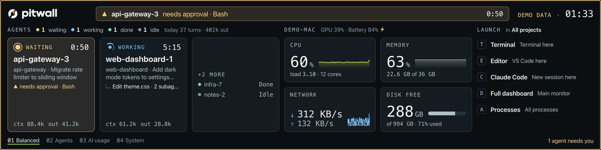
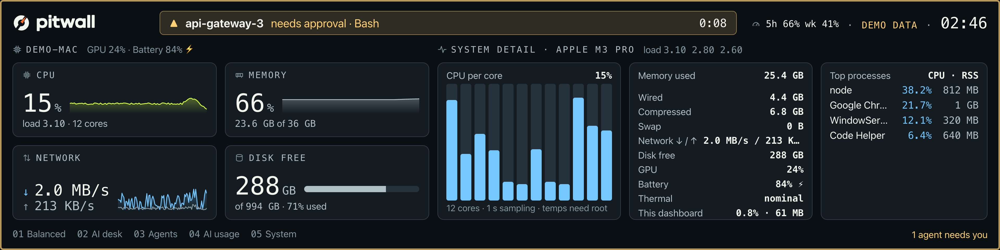
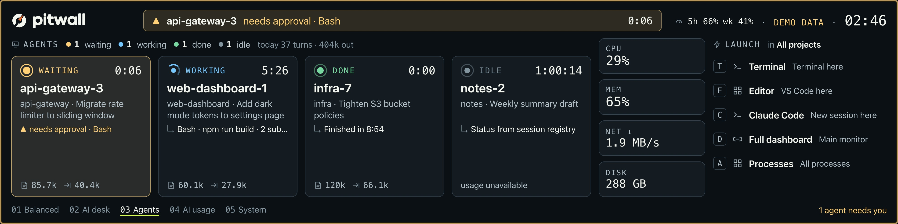
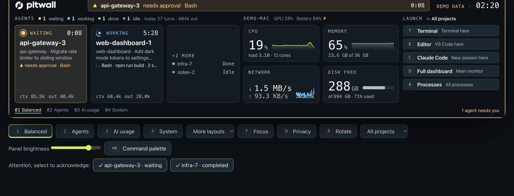

A dashboard for the screen beside your monitor.
Pitwall shows CPU, memory, network and disk, the Claude Code sessions you have running, and shortcuts to the tools you open most. Pick one of its templates and it fills in with live data from your computer. It drives a small USB display, or runs in a browser window if you don't have one.
Early development. Works on macOS today; Windows builds are in testing. Free and open source under the MIT license.
Reading the default layout
This is Balanced, the template Pitwall starts with. Values refresh on their own schedule, from every second for CPU to every 15 seconds for disk space.

1 2 3 4 5- HeaderThe layout and project you're looking at. When an agent needs you, it turns into an amber alert saying who is waiting, for what, and for how long.
- AgentsOne card per Claude Code session: status, time in that status, task title, latest tool, context size and output tokens.
- ComputerCPU with a 90 second trend, memory, network down and up, and free disk. GPU and battery sit in the label row.
- LauncherYour shortcuts and their keys. The screen has no touch, so you run them from the menu bar or the desktop dashboard.
- FooterTemplate tabs with their number keys, and either the attention count or the latest event.
Watching a machine, or watching agents
Both setups below ship as built-in templates. Switch between them with a number key, or let Pitwall rotate through them.
A workstation or home server
The Monitor template puts health and detail side by side, so you can see what is busy without opening Activity Monitor or Task Manager.
- CPU per core, with load averages
- Memory split into used, wired, compressed and swap
- Network throughput and free disk space
- The busiest processes, with their CPU and memory use
- GPU, battery and thermal state on macOS
Not yet: checks on services (HTTP, ports, ping) and watching other machines. Both are planned.

Running coding agents
With the Claude Code hooks installed, Pitwall hears about each session as it works. When one asks for approval, asks a question or fails, three things happen.
- The screen's header turns amber and its edge lights up.
- The display's LED ring breathes amber.
- The menu bar shows
▲ 1.
The AI usage template adds today's measured token totals and a row per running session. Ollama shows which models are loaded. Codex, Cursor and Claude Desktop are only detected as running, with no task detail.
Not yet: cost, and task detail for agents other than Claude Code.

Templates, widgets and data sources
A dashboard is a template filled with widgets, and each widget reads from a data source. All of it lives in one JSON file that you edit in any text editor.
- Template
- A named grid of up to four widgets. Six ship with Pitwall:
balanced,agents,focus,usage,systemandmonitor. Write your own, or override a built-in by reusing its id. - Widget
- One block of the screen:
ai,health,health-mini,launcher,usageorsystem. - Data source
- Where the numbers come from. Today these are built in: your computer's own counters, Claude Code's session files and hooks, and Ollama's local API. Sources you add yourself are planned.
- Action
- A launcher entry: a terminal or app opened in the selected project, or a URL. Only actions listed in the file can run.
// config.json: a wide agents template on key 2 "ui": { "layouts": ["balanced", "wide", "monitor"] }, "layouts": [{ "id": "wide", "name": "Wide agents", "columns": ["1300px", "1fr"], "slots": ["ai", "launcher"] }], "actions": [{ "id": "claude", "label": "Claude Code", "key": "c", "kind": "terminal", "app": "iTerm", "run": "claude" }]
Setting it up on your desktop
Pitwall is one program. It runs in the background, adds an icon to the menu bar, and serves the dashboard to your browser at 127.0.0.1.
Build it
There's no installer yet, so you build it with Go.
git clone https://github.com/goriparthi/pitwall cd pitwall && scripts/build.sh
Connect Claude Code
Optional. Adds 12 hook entries to
~/.claude/settings.json, after backing it up.bin/pitwall hooks install
Start it
The display lights up if one is connected. Without one, open the desktop dashboard.
bin/pitwall start bin/pitwall open

Drawing of the menu with its real items, shortened.
Global hotkeys
They work from any app, so you can change the screen without leaving your editor.
| ⌃⌥1 to 9 | Switch template |
| ⌃⌥F | Show only working, waiting and failed agents |
| ⌃⌥H | Hide session names, projects and tasks |
| ⌃⌥K | Command palette in the desktop dashboard |
On Windows the same keys use Ctrl+Alt.
What works today
Pitwall is young. This table tracks the code, including what isn't done.
No installer yet
If you're comfortable with Go, you can build Pitwall from source today. Otherwise, watch the repository on GitHub to hear about the first release.
To build it, you'll need:
- Go 1.26 or newer
- Chrome, Edge or Brave, which renders the display
- on macOS, Homebrew's
libusbat build time (linked in, so nothing extra at run time)
Your data stays on your computer. Pitwall listens on 127.0.0.1 only, and the hooks forward event names, never your prompts, commands or output.